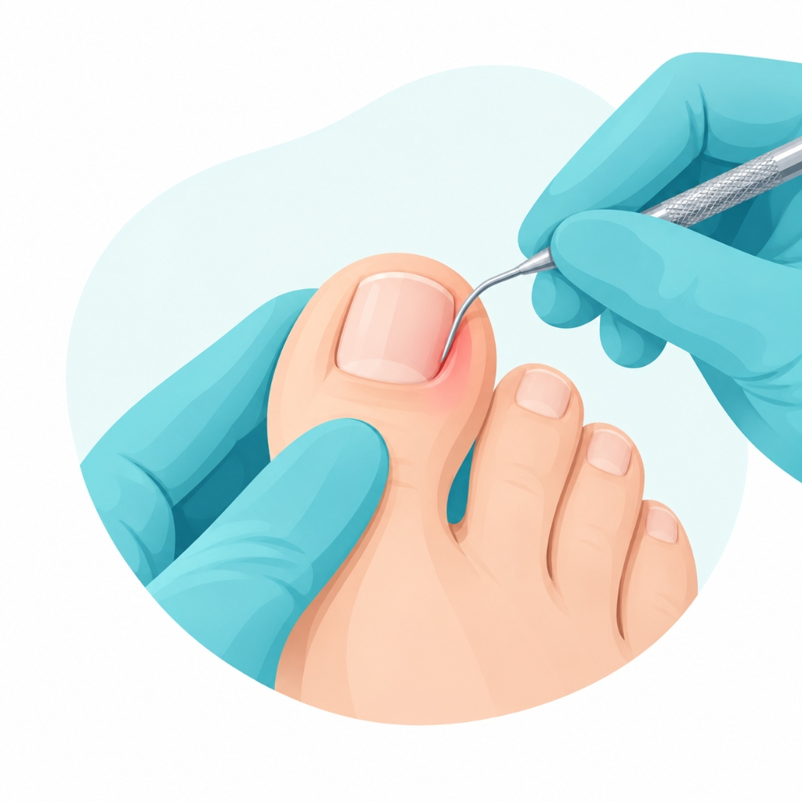
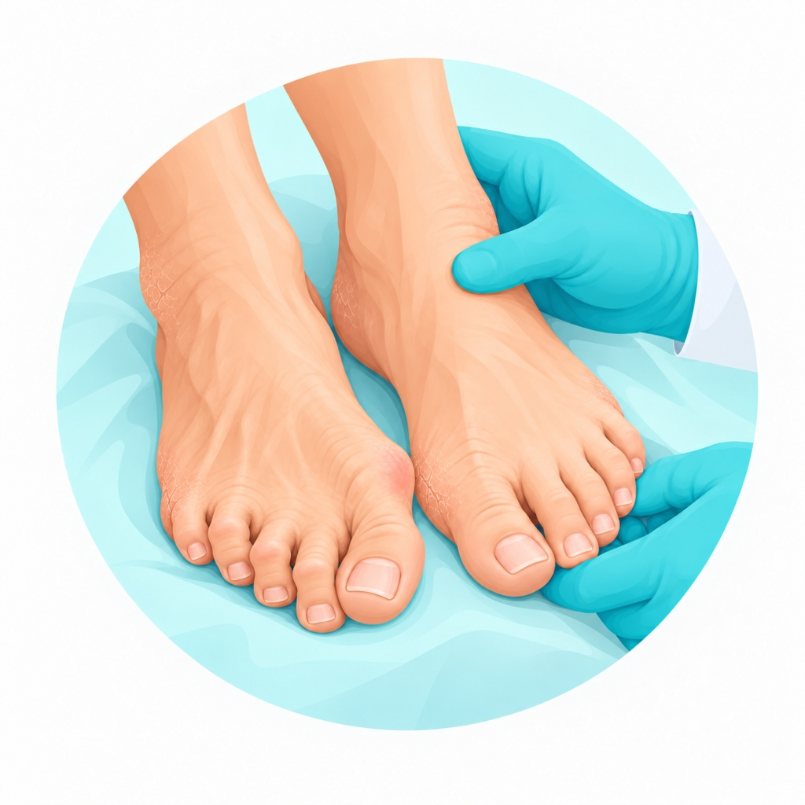
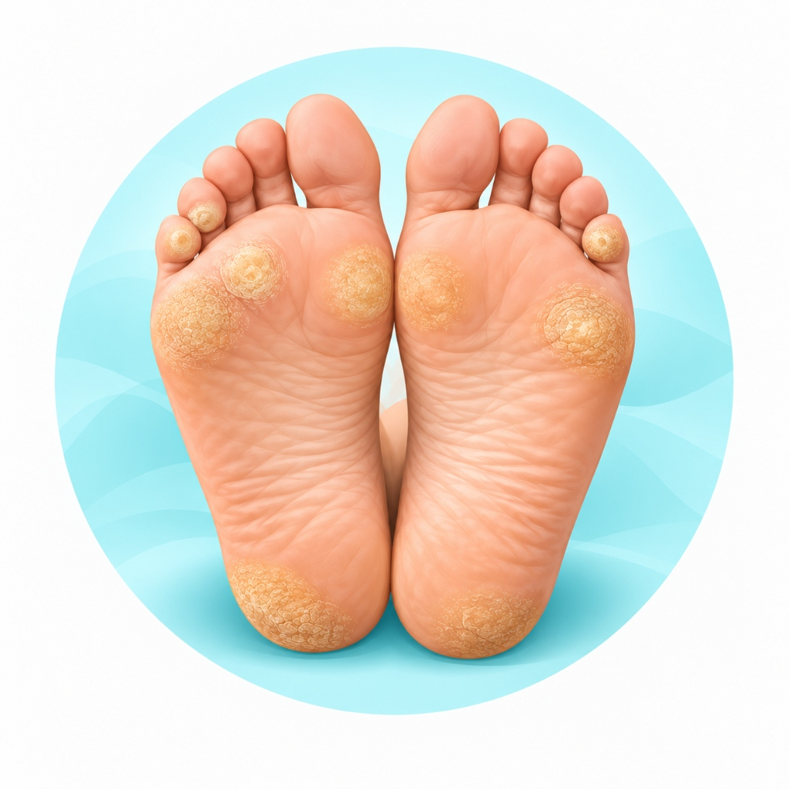
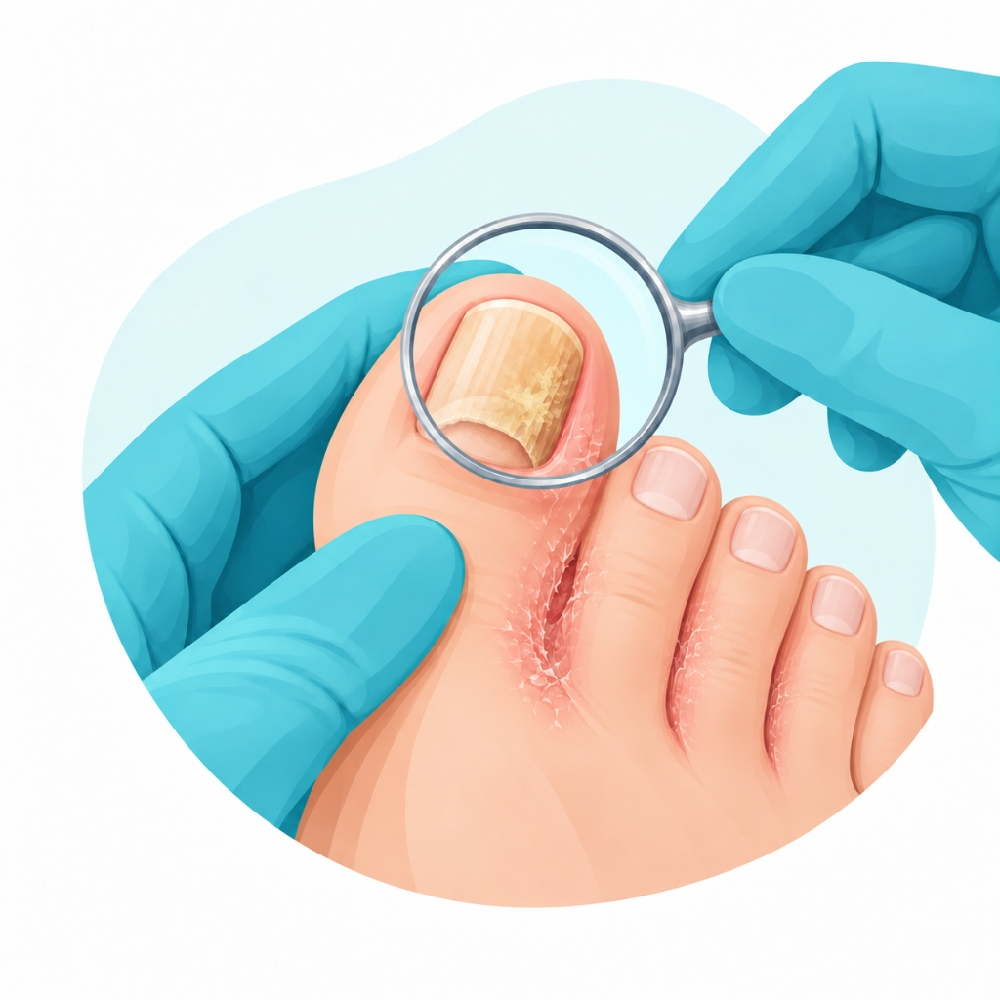
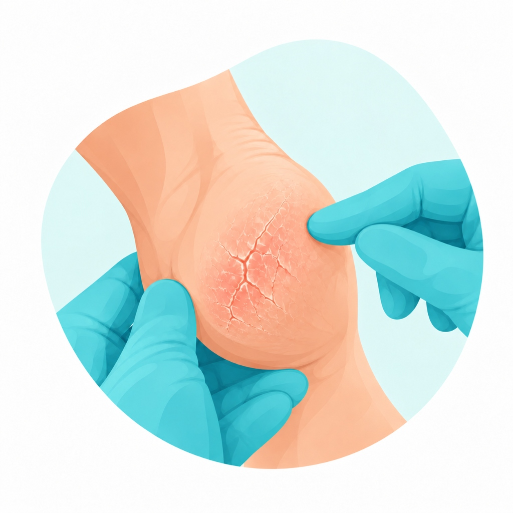
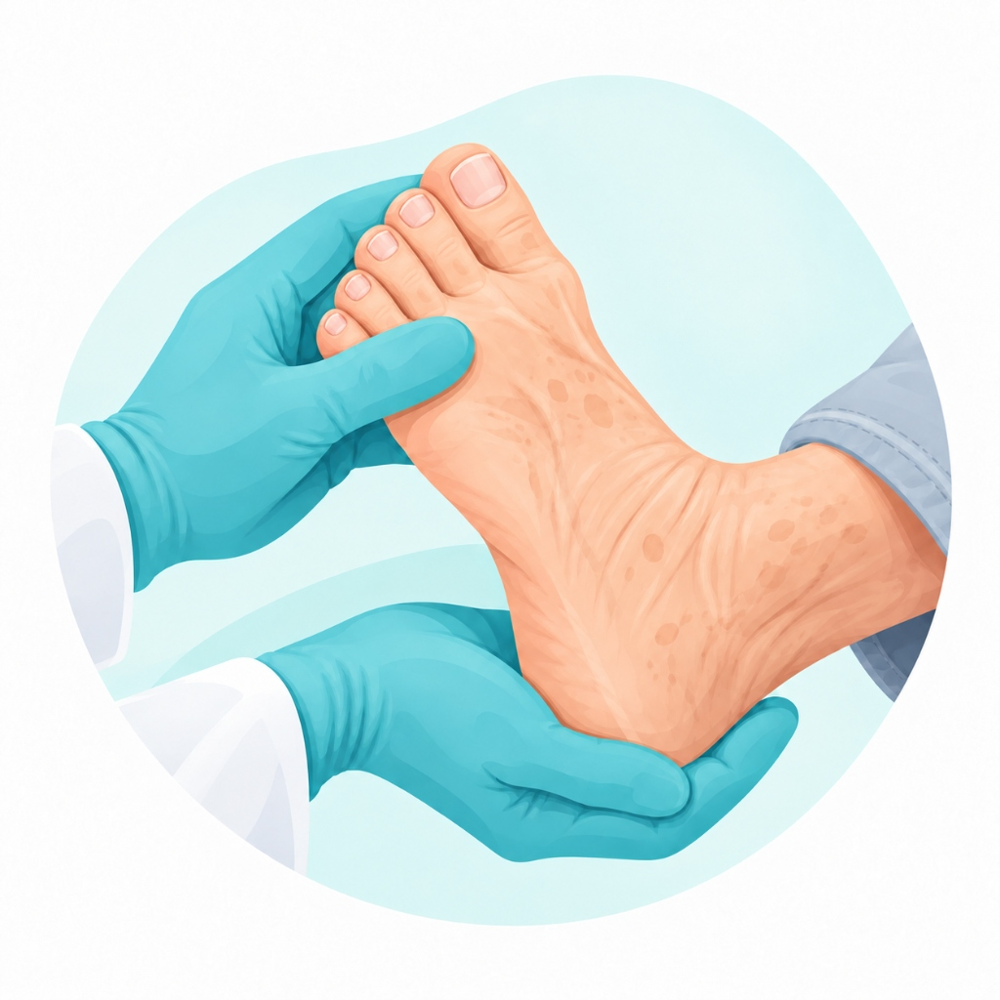
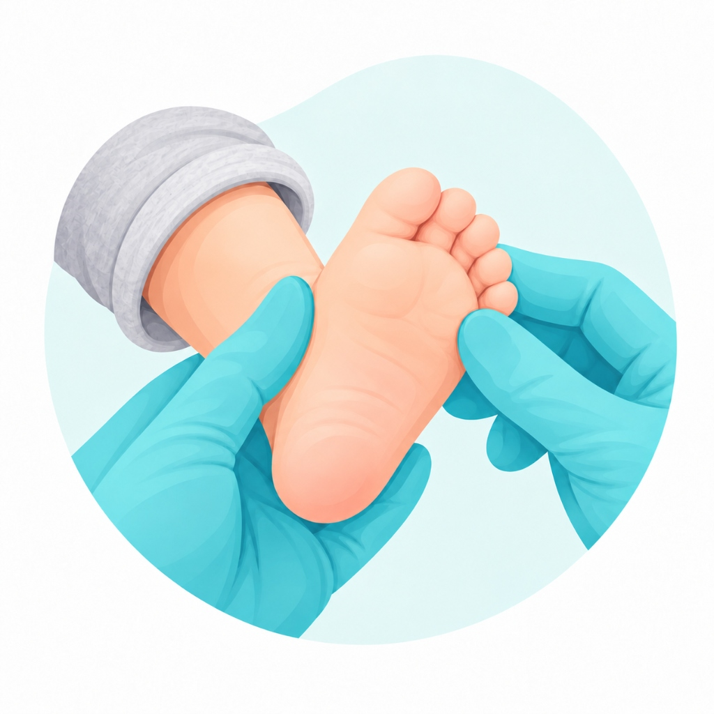

Cuidado especializado para os seus pés
Atendimento em podologia clínica para adultos, idosos e crianças, com foco em unha encravada, pé diabético, calosidades, micoses e prevenção.
Sobre a TB Podologia
Atendimento clínico especializado para crianças, adultos e idosos, com foco na prevenção, no cuidado e na saúde dos pés.
O atendimento é realizado de forma individualizada, com atenção às necessidades de cada paciente e aos diferentes perfis clínicos.
Entre os principais cuidados estão unha encravada, calos e calosidades, micoses, frieiras, rachaduras e acompanhamento podológico de pessoas com diabetes.
Com mais de 10 anos de experiência clínica, a TB Podologia busca oferecer atendimento cuidadoso, responsável e humanizado.
Serviços

Unha encravada
Tratamento com técnica podológica para aliviar dor, inflamação e desconforto associados à unha encravada.

Pé diabético
Atendimento podológico com atenção especial à prevenção de lesões e aos cuidados específicos relacionados ao pé diabético.

Calos e calosidades
Remoção podológica segura de espessamentos da pele e cuidados voltados ao alívio do desconforto.

Micoses e frieiras
Avaliação podológica e orientações para os cuidados das unhas e da pele dos pés.

Rachaduras nos pés
Cuidados podológicos e orientações para pele ressecada e prevenção de fissuras.

Podologia geriátrica
Cuidado especializado para as necessidades dos pés de pessoas idosas, com atenção à mobilidade, circulação e prevenção de lesões.

Podologia pediátrica
Atendimento direcionado às necessidades dos pés de bebês e crianças, com abordagem cuidadosa e preventiva.
Acompanhe nossas postagens
Siga nosso perfil no Instagram para receber dicas de saúde, prevenção e conhecer mais sobre nossos tratamentos.
@tb.podologia →Agende seu atendimento
Entre em contato pelo WhatsApp para consultar horários disponíveis e agendar seu atendimento.
Agendar pelo WhatsAppNossa Localização
R. Alécio Masson, 131 - Alto Boqueirão, Curitiba - PR